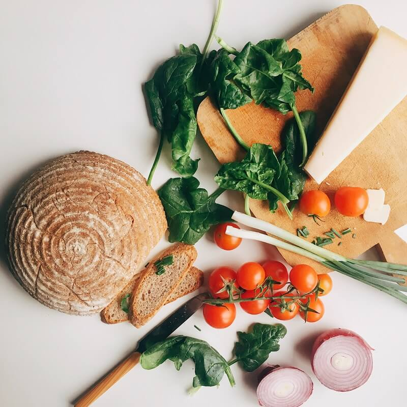

Reeducação alimentar
Orientações para construir hábitos possíveis e uma relação mais tranquila com a alimentação.
Um cuidado pensado para cada história, com escuta, orientação e respeito à sua rotina.
Serviços ilustrativos da clínica fictícia Nutrir
Orientações para construir hábitos possíveis e uma relação mais tranquila com a alimentação.
Um olhar para a alimentação que acompanha seu treino, seu descanso e os seus objetivos.

Possibilidades para organizar as refeições da casa, respeitando a cultura e a rotina familiar.
Escuta e acolhimento para conversar sobre seus hábitos, preferências e dificuldades alimentares.
Orientações que consideram seu histórico, suas necessidades e a alimentação no cotidiano, em diálogo com os profissionais que acompanham você.
Ideias para organizar compras, aproveitar os alimentos e preparar refeições de um jeito que faça sentido para o tempo e os recursos disponíveis.
Uma conversa sobre sua rotina, seus hábitos, sua saúde e o que você espera do acompanhamento.
Orientações individualizadas, considerando preferências, acesso aos alimentos e possibilidades do seu dia a dia.
Retornos para conversar sobre o que funcionou, acolher dificuldades e ajustar as estratégias.
Na clínica Nutrir, em Vila Serena – SP, cidade fictícia deste modelo. Um espaço para conhecer sua história e construir seu cuidado.
Ver endereço e contatosEncontros por videochamada, com espaço para conversar sobre sua alimentação e organizar orientações adaptadas à sua rotina.
É um encontro para conhecer sua história, seus hábitos e seus objetivos. Os próximos passos são combinados com você, respeitando suas necessidades.
Documentos já disponíveis podem contribuir, mas a orientação sobre o que levar deve ser confirmada com o profissional antes do encontro. Não é necessário fazer exames por conta própria.
Preferências, cultura alimentar, acesso aos alimentos e rotina fazem parte do cuidado. Necessidades específicas são avaliadas individualmente.
A frequência é combinada conforme a avaliação inicial e as necessidades de cada pessoa. Este modelo não oferece pacotes ou agendamentos reais.
Clínica e contatos fictícios. Nenhum agendamento é realizado neste modelo.